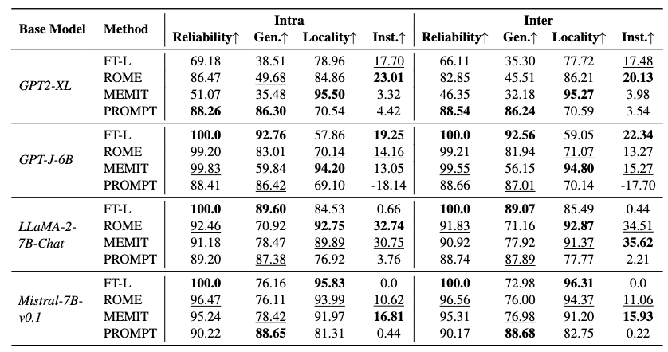
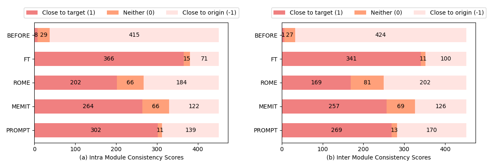
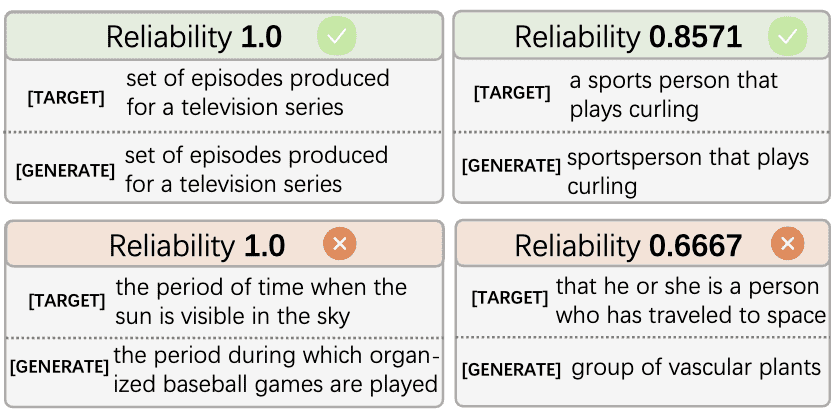
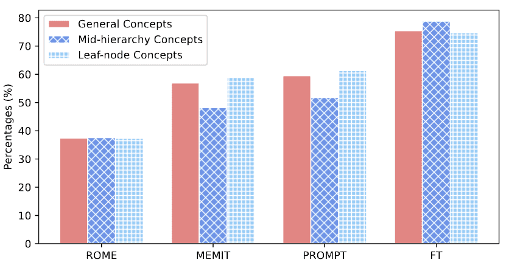
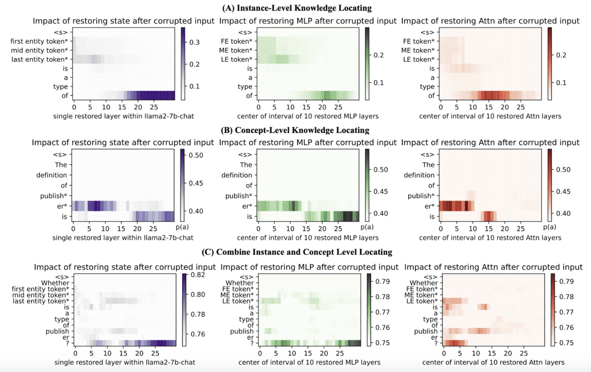
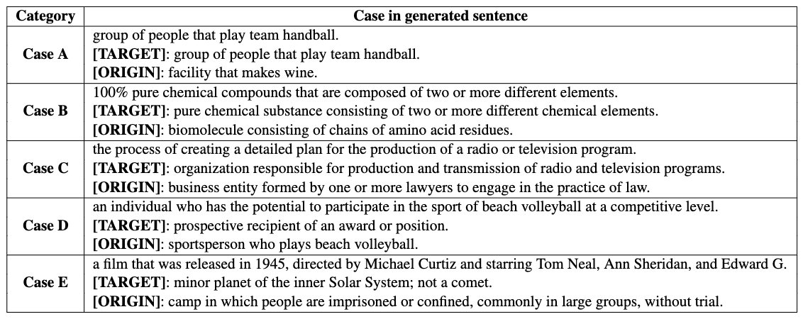

Abstract
Recently, there has been a growing interest in knowledge editing for Large Language Models (LLMs). Current approaches and evaluations merely explore the instance-level editing, while whether LLMs possess the capability to modify concepts remains unclear. This paper pioneers the investigation of editing conceptual knowledge for LLMs, by constructing a novel benchmark dataset ConceptEdit and establishing a suite of new metrics for evaluation. The experimental results reveal that, although existing editing methods can efficiently modify concept-level definition to some extent, they also have the potential to distort the related instantial knowledge in LLMs, leading to poor performance. We anticipate this can inspire further progress in better understanding LLMs.
Conceptual Knowledge Editing

ConceptEdit
Overview of ConceptEdit benchmark construction.
Building on the DBpedia Ontology, we enrich concepts with detailed definitions and associated instances, ensuring quality through the following six processes and manually review all the descriptions we gathered:
- • Concept Selection: DBpedia ontology, a tree-like structure, to assemble a collection of concepts.
- • Concept Completion: SPARQL to interrogate 20 instances and Wikidata to augment it with descriptive content.
- • Descriptor Generation: a manually curated template and a distinct concept chosen to supplant the original definition.
- • Neighbour Construction: restructured examples as equivalent and out-scope from the remaining pool.
- • Instance Filtration: meticulously sieved the instances to ascertain that LLMs possess a priory knowledge.
- • Intra vs. Inter Split: testing editing in same superclass Intra and different superclass Inter categories.
Main Results
Table 1: Main results of the baselines on the ConceptEdit. Bold results denote the best performance in each setting, while underlined results signify the second-best. ↑ means the metric goes higher if it performs better. Gen. is the abbreviation of metric Generalization and Inst. is the abbreviation of metric Instance Change.

Figure 3: The results of the Concept Consistency employed on the LLaMA-2-7B-Chat across both intra and inter modules. This investigation entailed a comparison of generated sentences both pre-edited and post-edited via different editing methods.
The evidence clearly indicates that FT-L surpasses other methodologies.
Analysis
♥ The gap between Reliability and Concept Consistency signals the necessity for concept specific evaluation metrics.
Figure 4: Cases of Reliability Scores vs Generated Sentences. This Figure lists four representative cases that showcase the discrepancy.
♥ The impact of concepts' structure on editing effects across superclasses but NOT hierarchy.
Figure 5: Considering concepts as tree-like structure, we assess the successful edits on mid-hierarchy and leaf-node concepts.
♥ Locating conceptual knowledge emphases the attention mechanism within early few layers.
FIgure 6: To further explore the storage patterns and mechanisms of correlation between concepts and instances, we use casual tracing, identifying neuron activations in LLaMA-2-7B-Chat which has 32 transformer layers. The conceptual and instantial knowledge locating for the concept publisher and its corresponding instances by perturbing the input tokens.
♥ Generated sentence shows varying degrees of success in edits.
Figure 7: Diverse scenarios showcasing the model’s range of outcomes, from successful editing executions to cases of failure. [TARGET] denotes the revised description. [ORIGIN] refers to the initial recognition prior to editing.
Acknowledgement
We would like to express our sincere gratitude to DBpedia，Wikidata，OntoProbe-PLMs and ROME.
Their contributions are invaluable to the advancement of our work.